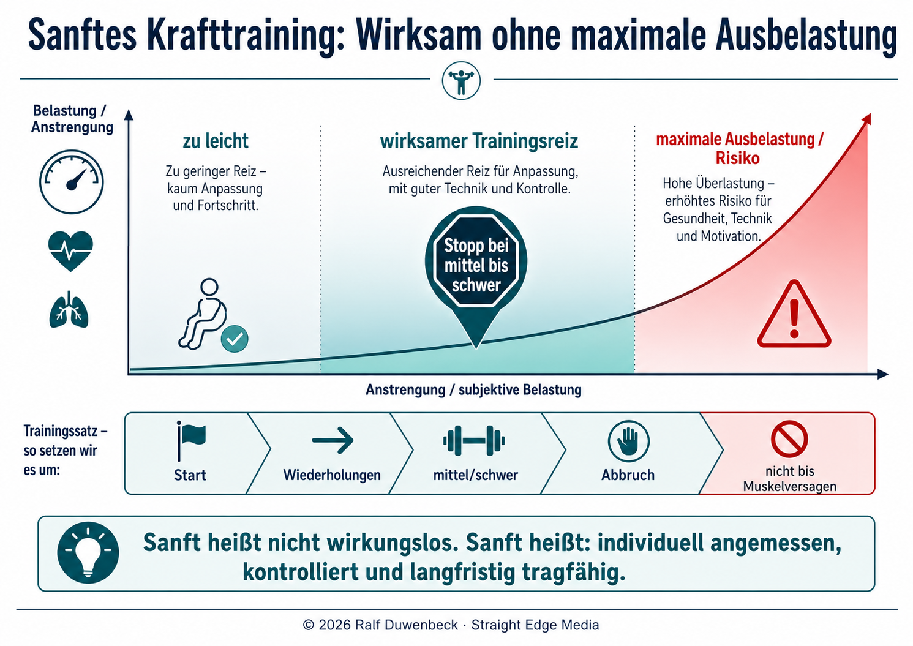
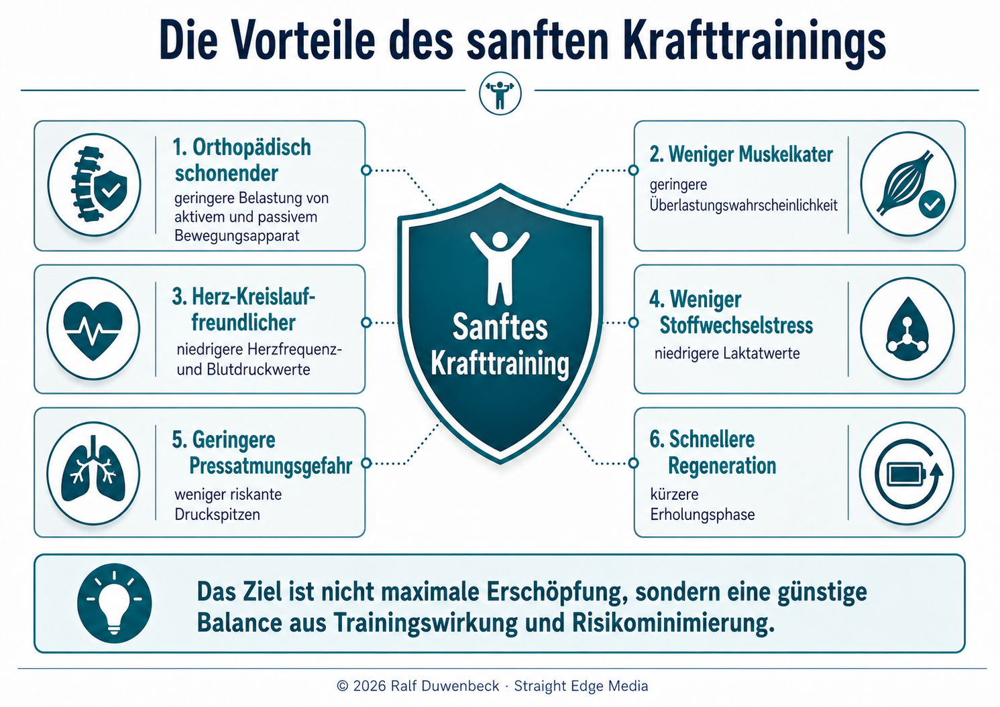
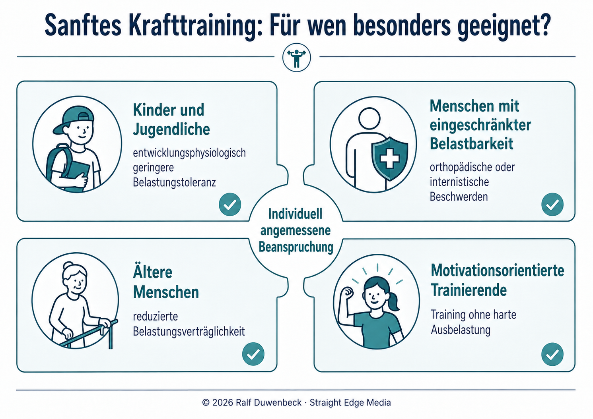
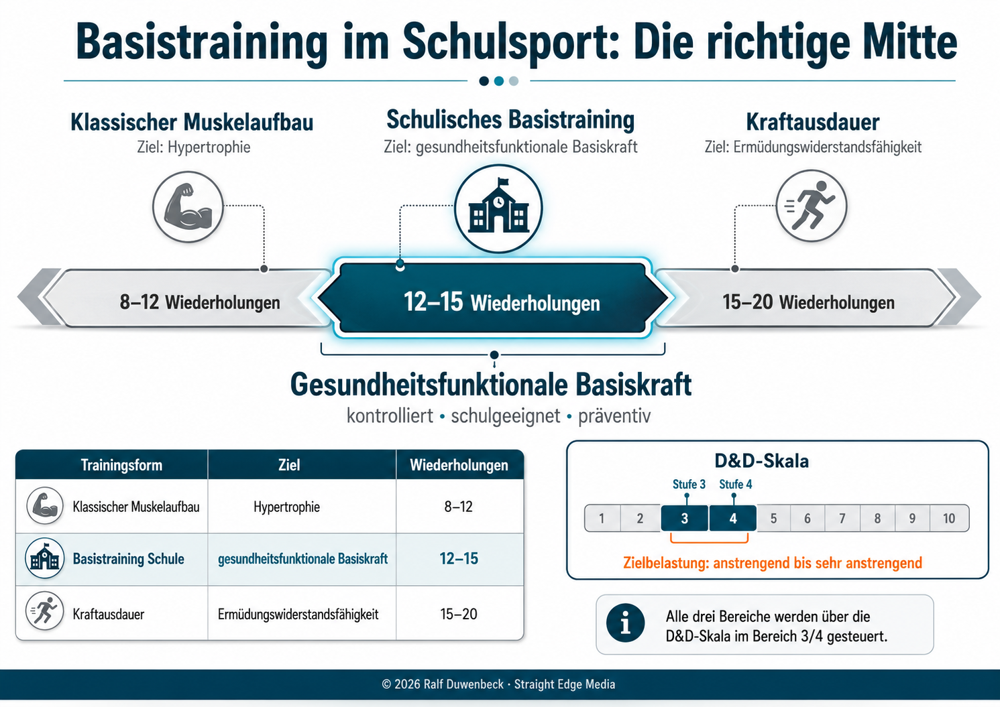

Ein ganzheitliches Unterrichtsvorhaben aus der Schulpraxis: ein sanftes Einsatz-Krafttraining, das wirksam, sicher und zeitökonomisch ist. Schülerinnen und Schüler lernen, Muskel- und Bewegungsfunktionen zu verstehen und Übungen selbstständig funktional zu beurteilen – Gesundheit statt maximaler Ausbelastung.
Grundlage: Deddens & Duwenbeck – Das Fitness-Studio in der TurnhalleAuflage: 2. Aufl. 2013ISBN: 978-1490426198
LeitbildDas Fitness-Studio in der Turnhalle – sechs didaktische PrinzipienAntippen zum Vergrößern & Zoomen
Teil AGrundlagen: Warum & WasDas pädagogische Konzept und die fachliche Legitimation des Krafttrainings in der Schule.
Abschnitt 1
Das ganzheitliche Konzept
Das Unterrichtsvorhaben ist direkt aus der Schulsportpraxis entstanden und setzt die Richtlinien und Lehrpläne Sport in Nordrhein-Westfalen um. Es grenzt sich bewusst von kommerziellen und leistungssportlichen Ansätzen ab.
gesund-funktionales MuskelfitnesstrainingDer zentrale Begriff dieses Konzepts: ein Krafttraining, das die Gesundheit in den Mittelpunkt stellt und funktional – also bezogen auf Person, Alltag und Bewegungsapparat – gestaltet ist. In der schulischen Umsetzung ist es ein sanftes Einsatz-Krafttraining.
Verstehen statt nur ausführen: Ziel ist nicht maximale Leistungssteigerung, sondern Schülerinnen und Schülern das theoretische und praktische Fundament zu vermitteln, um Muskel- und Bewegungsfunktionen anatomisch zu begreifen. So werden sie befähigt, Trainingsübungen eigenständig funktional zu analysieren, zu entwickeln und kritisch zu bewerten. Turnhalle-Didaktik, Abschnitt 1
Aus der Praxis für die Praxis: Das Konzept verfolgt ein ganzheitliches Bildungsverständnis und ist unmittelbar an den schulischen Rahmenbedingungen der gymnasialen Oberstufe orientiert – modifiziert auch in der Sekundarstufe I einsetzbar. NRW-Richtlinien Sport
Übertragbar über die Schule hinaus: Der pädagogische Ansatz lässt sich flexibel auf den außerschulischen Breitensport und freie Trainingsgruppen übertragen und bleibt damit lebenslang anschlussfähig. Turnhalle-Didaktik, Abschnitt 1
Abschnitt 2
Relevanz & Wandel des Schulsport-Krafttrainings
Die Einbettung von Krafttraining in den schulischen Fächerkanon resultiert aus gravierenden Veränderungen der jugendlichen Umwelt und modernen sportmedizinischen Erkenntnissen.
Grafik 1Warum Krafttraining in den Schulsport gehörtAntippen zum Vergrößern & Zoomen
30–74 %Kraftzuwachs bei Untrainierten in den ersten Trainingswochen
1×pro Woche genügt für hocheffektives Einsatzkrafttraining
≈100 %Zuwachs beim „Flexed arm hang" (Austermann 2005)
Kompensation von Bewegungsmangel: In einer bewegungsärmeren Lebenswelt werden notwendige Wachstums- und Funktionsreize unzureichend gesetzt. Dies führt zu fortschreitender Inaktivitätsatrophie und muskulären Insuffizienzen. Schulisch initiiertes Krafttraining ist daher präventiv unumgänglich, um den Stütz- und Bewegungsapparat zu stabilisieren. S. 14 / Fn 26, 27
Historischer Paradigmenwechsel: Frühere Vorbehalte befürchteten Schäden für den wachsenden Organismus oder Beweglichkeitsverlust. Heute ist die generelle Legitimation von Krafttraining für Kinder und Jugendliche wissenschaftlich unumstritten. S. 14 / Fn 29–31
Hohe Trainierbarkeit im Jugendalter: Bei Untrainierten zeigen sich bereits in den ersten Wochen signifikante Kraftzuwächse von 30 % bis 74 % („Anfangseffekte"). Auch freizeitsportlich Aktive weisen messbare muskuläre Unterforderungen auf. S. 15 / Fn 34–37
Neuromuskuläre Adaptation statt Hypertrophie: Die Kraftzuwächse beruhen nicht auf einer Zunahme der Muskelmasse, sondern auf neuromuskulären Veränderungen und optimierter inter- und intramuskulärer Koordination. Vorurteile über „Muskelberge" bei Kindern sind haltlos. S. 15 / Fn 39, 40
Didaktische Grundsätze des Jugendtrainings: Kein bloß quantitativ reduziertes Erwachsenentraining. Maximen: Übungen unter strikter Entlastung der Wirbelsäule (Bandscheibenschonung), Vermeidung großer lokaler Belastungsspitzen, primärer Fokus auf Rumpf- und Haltemuskulatur. S. 15 / Fn 41–44
Teil BDas sanfte PrinzipDer Kern des Konzepts: wirksam trainieren ohne maximale Ausbelastung – nachhaltig, vorteilhaft und für viele Zielgruppen geeignet.
Abschnitt 3
Was heißt „sanft"?
Sanftes Krafttraining sucht bewusst den wirksamen Trainingsreiz – und stoppt vor der maximalen Ausbelastung. Es geht nicht um die größte Last, sondern um die richtige.

Grafik 2Wirksam ohne maximale AusbelastungAntippen zum Vergrößern & ZoomenGrafik 3Langfristig statt maximalAntippen zum Vergrößern & Zoomen
Der wirksame Reiz liegt in der Mitte: Zu leichte Lasten setzen keinen ausreichenden Anpassungsreiz, maximale Ausbelastung erhöht das Risiko für Gesundheit, Technik und Motivation. Trainiert wird im Bereich „mittel bis schwer" – mit guter Technik und Kontrolle, ohne bis zum Muskelversagen zu gehen.
Sanft heißt nicht wirkungslos: Sanft heißt individuell angemessen, kontrolliert und langfristig tragfähig. Der Trainingssatz wird bei spürbarer Anstrengung beendet – nicht beim völligen Versagen der Muskulatur.
Langfristig statt maximal: Nicht die schnellstmögliche Maximalanpassung ist das Ziel, sondern eine dauerhafte, angemessene Belastung. Regelmäßiges, angepasstes Training sichert über viele Jahre Gesundheit, Lebensqualität und Bewegungsfähigkeit – bis ins hohe Alter.
Abschnitt 4
Die Vorteile des sanften Krafttrainings
Das Ziel ist nicht maximale Erschöpfung, sondern eine günstige Balance aus Trainingswirkung und Risikominimierung. Daraus ergeben sich konkrete gesundheitliche Vorzüge.

Grafik 4Sechs Vorteile auf einen BlickAntippen zum Vergrößern & Zoomen
Orthopädisch schonender: Minimiert orthopädische Risiken, die durch unzureichendes Aufwärmen, Ermüdung am Serienende oder Koordinationsverluste bei hoher Satzzahl entstehen. Die Belastung von aktivem und passivem Bewegungsapparat bleibt im physiologisch sicheren Bereich. S. 16 / Fn 54
Herz-Kreislauf-freundlicher & weniger Pressatmung: Gegenüber dem Mehr-Satz-Training bis zur Muskelerschöpfung sinken Herz-Kreislauf- und Stoffwechselbelastungen drastisch (niedrigere Herzfrequenz und Blutdruckwerte). Die gefürchtete Pressatmung mit extremen Blutdruckspitzen tritt praktisch nicht auf. S. 17 / Fn 55–57
Weniger Muskelkater & weniger Stoffwechselstress: Da nicht bis zum völligen Versagen trainiert wird, fallen niedrigere Laktatwerte an und die Überlastungswahrscheinlichkeit sinkt – der Körper wird gefordert, aber nicht überfordert.
Schnellere Regeneration: Die kontrollierte Belastung verkürzt die nötige Erholungsphase. Das Training bleibt im Schulalltag und im Breitensport gut wiederholbar und alltagstauglich.
Abschnitt 5
Für wen ist sanftes Krafttraining besonders geeignet?
Weil die Beanspruchung individuell angemessen gesteuert wird, eignet sich das sanfte Krafttraining für sehr unterschiedliche Gruppen – weit über die Schule hinaus.

Grafik 5Geeignete ZielgruppenAntippen zum Vergrößern & Zoomen
Kinder & Jugendliche: Entwicklungsphysiologisch besteht eine geringere Belastungstoleranz – die schülergerechte, kontrollierte Belastung ist hier ideal und didaktisch geboten.
Menschen mit eingeschränkter Belastbarkeit: Bei orthopädischen oder internistischen Beschwerden erlaubt das sanfte Training einen sicheren Wiedereinstieg und dauerhaftes Üben im verträglichen Bereich.
Ältere Menschen: Eine reduzierte Belastungsverträglichkeit wird durch die individuell angemessene Beanspruchung berücksichtigt – Krafttraining bleibt bis ins Alter möglich und sinnvoll.
Motivationsorientierte Trainierende: Wer ohne harte Ausbelastung trainieren möchte, bleibt eher dauerhaft dabei – Kontinuität schlägt kurzfristige Maximalreize.
Teil CMethode & SicherheitWie das sanfte Prinzip konkret umgesetzt wird: die Einsatz-Methode, die Ausgewogenheit des Körpers und die sichere Ausführung.
Abschnitt 6
Ein-Satz- statt Mehr-Satz-Training
Im eng getakteten Schulalltag stehen sich zwei Kernkonzepte gegenüber. Die wissenschaftliche Evidenz liefert klare Vorteile für die zeiteffiziente Einsatz-Methode (Single-Set-Training).
Grafik 6Warum Ein-Satz-Training im Schulsport sinnvoll istAntippen zum Vergrößern & Zoomen
Das sanfte Ein-Satz-Training: EMG-Messungen und Folgestudien belegen, dass ein gesundheitsorientiertes Krafttraining mit nur einem Satz pro Übung bei adäquater Intensität hochsignifikante, gesundheitsrelevante Effekte erzielt – selbst wenn der Satz nicht bis zur vollständigen Erschöpfung geführt wird. Diese Reize sind lang überdauernd und überstehen Ferienphasen oder Stundenausfälle. S. 16 / Fn 46–53; Boeckh-Behrens/Buskies 2000
Enormer Zeitgewinn: Mit dem strukturierten Stationsbetrieb lässt sich ein vollständiges Ganzkörperprogramm mit 16 Übungen für 16 Muskelgruppen in weniger als 20 Minuten absolvieren. Das macht es auch für den zeitlich limitierten außerschulischen Jugendsport hochattraktiv. Turnhalle-Didaktik, Abschnitt 3
Empirischer Nachweis (Austermann 2005): Einmal wöchentliches Einsatzkrafttraining in der Sek II ist hocheffektiv. Die Interventionsgruppe erzielte doppelt so hohe Leistungsverbesserungen wie die Kontrollgruppe; beim „Flexed arm hang" betrug der Zuwachs nahezu 100 %. S. 17 / Fn 59, 60
Didaktische Ökonomie: Das Ein-Satz-Prinzip ermöglicht flüssigen Stationsbetrieb, verhindert Leerzeiten und hält die Motivation durch schnelle Wechsel hoch. Ein klassisches Mehr-Satz-Training ist im Schulsport meist weder sinnvoll noch organisierbar – behält aber für fortgeschrittene, leistungsorientierte Schüler seine Berechtigung. S. 17 / Fn 61–63
Abschnitt 7
Ausgewogenheit: Agonist & Antagonist
Ein zentrales Qualitätsmerkmal des gesund-funktionalen Krafttrainings ist die gleichmäßige Beanspruchung des gesamten Körpers, um ein ausgewogenes Verhältnis der Kräfteverhältnisse zu sichern.
Spieler und Gegenspieler im Gleichgewicht: Ein Trainingsprogramm muss so konzipiert sein, dass sowohl die primär bewegenden Muskeln (Agonisten) als auch deren Gegenspieler (Antagonisten) im gleichen Maße belastet werden. Turnhalle-Didaktik, Abschnitt 2
Gefahr bei Missachtung: Wird das Agonisten-Antagonisten-Prinzip vernachlässigt, drohen muskuläre Dysbalancen. Diese führen zu dauerhaften Störungen der Gelenkfunktionen und beeinträchtigen die Belastbarkeit des gesamten Stütz- und Bewegungsapparates.
„Es muss darauf geachtet werden, die Beuge- und Streckmuskulatur sowie die Adduktoren und Abduktoren der Arme, der Beine und des Rumpfes durch die Auswahl und die Variation der Übungen in gleichem Maße zu belasten, um ein muskuläres und funktionelles Ungleichgewicht zu vermeiden."
– Mende, J.: Muskeltraining, Hamburg 1999, S. 34 (zit. nach S. 18)
Symmetrische Übungsfolge im Circuit-Training
Der eingesetzte Circuit baut systematisch auf paarweise gekoppelten Bewegungsrichtungen auf, um muskuläre Gleichgewichte zu sichern (vgl. Lenhart & Seibert 1996).
Paarweise gekoppelte Bewegungsrichtungen im Circuit (nach Turnhalle-Didaktik, Abschnitt 2).
Bewegung (Agonist)
↔
Gegenbewegung (Antagonist)
Arm beugen
→
Arm strecken
Arm heben
→
Arm senken
Arm anziehen
→
Arm abspreizen
Bein beugen
→
Bein strecken
Bein anziehen
→
Bein abspreizen
Fuß beugen
→
Fuß strecken
Hüfte beugen
→
Hüfte strecken
Rumpf beugen
→
Rumpf strecken
Abschnitt 8
Sichere Ausführung – die Checkliste
Die folgenden Grundregeln fassen zusammen, worauf es bei der praktischen Durchführung ankommt – die Sicherheitslogik des gesund-funktionalen Krafttrainings auf einen Blick.
Grafik 7Sicherheitslogik auf einen BlickAntippen zum Vergrößern & Zoomen
Wirbelsäule schützen: Übungen unter Entlastung der Wirbelsäule ausführen, Bandscheiben schonen und große lokale Belastungsspitzen vermeiden.
Sauber und kontrolliert bewegen: Ruhiges, gleichmäßiges Tempo im Rhythmus 2-1-2 (2 s Überwinden, 1 s Halten, 2 s Nachgeben) – Schwung und Reißen vermeiden.
Nicht bis zur Maximalerschöpfung: Stopp vor dem völligen Versagen der Muskulatur; der Reiz endet bei spürbarer, bewältigbarer Anstrengung.
Rumpf stabilisieren & Atmung kontrollieren: Die Rumpf- und Haltemuskulatur aktiv stabilisieren und gleichmäßig weiteratmen – keine Pressatmung.
Teil DSteuerung & GestaltungWie schwer darf es sein? Belastungssteuerung über das Körpergefühl und die konkreten Gestaltungsprinzipien des Basistrainings.
Abschnitt 9
Belastungssteuerung & D&D-Skala
Die korrekte Definition des Trainingsgewichts entscheidet über den gesundheitlichen Nutzwert. Maßgeblich ist nicht die Übung allein, sondern die Person, die sie ausführt.
„Ob eine Übung funktionell ist oder nicht, hängt nicht von der Übung ab, sondern vor allem von den Eigenschaften, Fähigkeiten und Fertigkeiten der Person, die die entsprechende Übung ausführen soll oder will, und von den Anforderungen an diese Person in Alltag, Beruf und Sport."
– Wydra 2000, S. 131 (zit. nach S. 18); vgl. Klee 2000: „Einsatztraining reicht!"
Personenorientierte Beurteilung: Deddens & Duwenbeck folgen der Forderung von Wydra und Klee nach einer differenzierten, personenorientierten Bewertung von Übungen. Die pauschale Einteilung in „funktionelle" und „unfunktionelle" Übungen greift zu kurz. Turnhalle-Didaktik, Abschnitt 4
Subjektive Methode (D&D-Skala): Schüler tasten sich eigenständig an ein Gewicht heran und bewerten es nach individuellem Anstrengungsgefühl. Ziel des schulischen Gesundheitstrainings sind die Stufen 3 und 4 der 6-stufigen Skala. Schülergerecht, schult Körperempfinden und Selbstkompetenz, wissenschaftlich anerkannt. S. 17–18 / Fn 64
„Quasi-objektive" Methode: Mathematische Ermittlung des 1-Repetition-Maximums (1-RM). Daraus wird prozentual (z. B. 40/50/60 % vom 1-RM) das Arbeitsgewicht abgeleitet. Da Tagesform, Motivation und Erfahrung stark einfließen, gilt sie nur als „quasi-objektiv". S. 18 / Fn 65
Maximalkrafttests: Bei adäquater Geräteauswahl und gründlicher Einweisung in den ersten drei Stunden methodisch vertretbar und als Grenzerfahrung wünschenswert. Für den Dauerbetrieb jedoch zu umständlich. S. 18 / Fn 66–68
Funktionelle Dehnungsaspekte: Zur Vermeidung von Fehlhaltungen (Hohlkreuz) kommt dem Dehnen des Hüftbeugers (M. iliopsoas) sowie der Kräftigung der beckenaufrichtenden Bauch- und Gesäßmuskulatur eine zentrale Rolle zu. S. 21 / Fn 74
Die 6-Stufen-Skala zur Beurteilung der Belastungsempfindung (D&D-Skala)
Grafik 8D&D-Skala: Wie schwer darf es sein?Antippen zum Vergrößern & Zoomen
Abb. 5: D&D-Skala für den Schulsport (adaptiert nach S. 21). Zielbereich des schulischen Gesundheitstrainings: Stufe 3 und 4.
Stufe
Subjektiver Eindruck
Konkrete Befindlichkeit / Ausprägung
1
Anstrengung kaum vorhanden.
Das Trainingsgewicht wurde fast nicht gespürt.
2
Anstrengung war vorhanden.
Das Gewicht war sehr leicht zu bewältigen.
3 · Ziel
Es war anstrengend.
Das Gewicht konnte dennoch ganz gut bewältigt werden.
4 · Ziel
Es war sehr anstrengend.
Das Gewicht konnte gerade so oft (wie vorgegeben) bewältigt werden.
5
Es war zu anstrengend.
Das Gewicht konnte nicht so oft wie gewollt bewältigt werden.
6
Es war viel zu anstrengend.
Das Gewicht war viel zu hoch; die Übung konnte gar nicht bewältigt werden.
Abschnitt 10
Gestaltungsprinzipien & Basistraining
Das schulische Training wird als „Basistraining" charakterisiert – eine methodisch sinnvolle Mischform, die sich im Spektrum der Wiederholungszahlen präzise positioniert.
Einordnung des Basistrainings

Grafik 9Basistraining im Schulsport: Die richtige MitteAntippen zum Vergrößern & Zoomen
Abb. 3: Einordnung des Basistrainings für die Schule (adaptiert nach S. 20).
Trainingsform
Primäres Trainingsziel
Ziel-Wiederholungszahl
Steuerungsstufe (D&D)
1. Klassischer Muskelaufbau
Hypertrophie (Muskelquerschnitt)
8–12 Wiederholungen
3 / 4
2. Basistraining (Schule)
Gesundheitsfunktionale Basiskraft
12–15 Wiederholungen
3 / 4
3. Kraftausdauer
Ermüdungswiderstandsfähigkeit
15–20 Wiederholungen
3 / 4
Zwei Wege – ein Prinzip
Innerhalb des gesundheitsorientierten Krafttrainings lassen sich je nach Ziel zwei Schwerpunkte setzen – beide werden über dasselbe subjektive Belastungsempfinden (mittel bis schwer, nicht sehr schwer) gesteuert.
Grafik 10Zwei Wege – ein PrinzipAntippen zum Vergrößern & Zoomen
Methodische Kernvariablen des schulischen Basistrainings
Grafik 11Das Trainingsrezept: Schulisches BasistrainingAntippen zum Vergrößern & Zoomen
Abb. 4: Gestaltungsprinzipien des gesundheitsfunktionalen Muskelfitnesstrainings (S. 20).
Agonistisch-antagonistisch (Spieler und Gegenspieler wechselseitig berücksichtigt)
Arbeitsweise
Dynamisch (konzentrische und exzentrische Muskelarbeit kombiniert)
Belastungszeit
1 Minute bis 45 Sekunden pro Satz (entspricht ca. 12–15 Wdh.)
Pausenzeit
30 Sekunden zwischen Sätzen bzw. Stationen (zeitökonomisch optimiert)
Bewegungstempo
Ruhig und gleichmäßig; Rhythmus 2-1-2 Sekunden (2 s Überwinden, 1 s Halten, 2 s Nachgeben)
Subjektive Empfindung
Anstrengend bis sehr anstrengend (Stufe 3 und 4 der D&D-Skala)
Methodenform
Priorisiert als Ein-Satz-Training (Stationsbetrieb); optional als Mehr-Satz-Training
Ziel des Basistrainings: organische Belastungsanpassung, Erlernen und Stabilisieren korrekter Bewegungsabläufe, nachhaltige Anhebung des allgemeinen Kraftniveaus sowie Optimierung von Energiestoffwechsel und Kalorienverbrauch. S. 20
Teil EQuellenDie dokumentierten Originalquellen und weiterführende Literatur.
Die Seitenangaben und Fußnoten (Fn) in den Faktenboxen verweisen auf die Originalpaginierung der Monographie. Hinweise mit „Turnhalle-Didaktik" beziehen sich auf die didaktische Zusammenfassung des Werks.
Anhang: Monographie-Auszüge als PDF
Auszug 1 – Gesundheitsorientiertes Krafttraining im Schulsport: Fachwissenschaftliche Zusammenfassung der Kernkapitel zur Relevanz, Methode, Belastungssteuerung und Gestaltungsprinzipien des schulischen Basistrainings nach Deddens & Duwenbeck (2013).
Auszug 2 – Das Fitness-Studio in der Turnhalle: Didaktische Analyse: Strukturierte didaktische Zusammenfassung des Unterrichtsvorhabens: ganzheitliches Konzept, Agonist-Antagonist-Prinzip, Einsatz-Methode, personenorientierte Beurteilung und Gestaltungsprinzipien des gesund-funktionalen Muskelfitnesstrainings.